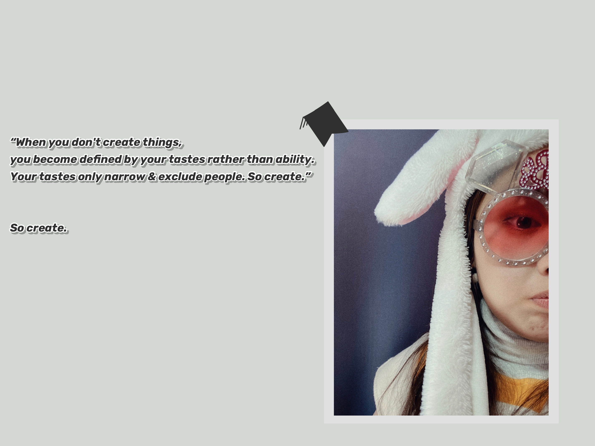
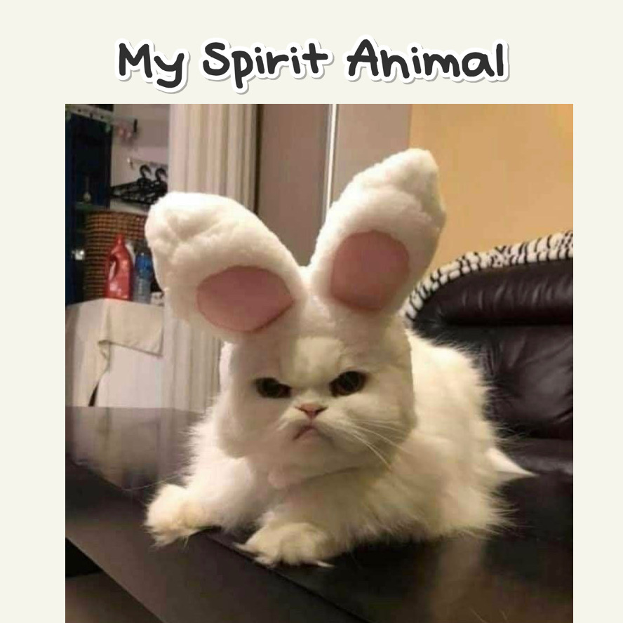

Hi
I'm Yoki Xue,
a sophomore at NYU Abu Dhabi.
I major in interactive media
with a minor in Computer Science.
I live in Shanghai now,
attending Golocal Program at NYUSH.
I love photography & video editing,
and secretly Disney cartoons.
I am quite new to coding
But I do enjoy the process